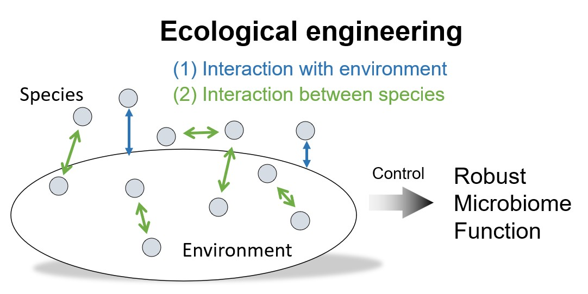

Ecological engineering for robust microbiome function.
Microbes run the metabolic machinery of our planet and our bodies, cycling nutrients in soil, shaping greenhouse-gas emissions, and governing human health. Therefore, controlling their metabolic activities (functions) is crucial for the planet’s greenhouse gas emissions and human health. A major hurdle in applying microbial solutions at scale is the lack of functional consistency and robustness in real-world environments. Unlike chemical drugs, microbial solutions are living systems whose functions depend on their surrounding abiotic and biotic environments. Yet most microbial solutions are designed under controlled laboratory conditions and do not systematically account for these environmental complexities when deployed in nature (Lee et al., 2023).
We addresses this lack of functional robustness, one of microbiome science’s greatest obstacles, by integrating microbial ecology, data-driven modeling & AI, and synthetic biology to enable the design of robust microbiome function.

The vaginal microbiome, compared to the soil microbiome, is arguably simpler and thus more tractable for a bottom-up approach. By systematically manipulating defined synthetic bacterial communities in cervicovaginal-mimicking media, we will find engineerable targets that can reliably shift the community from a diverse, high-pH, BV-associated state to a Lactobacillus-dominated, low-pH, optimal state.
The soil microbiome is highly complex in both its microbial composition and surrounding physicochemical environment. Therefore, we will use a top-down approach to first understand how environmental changes affect microbiome function (e.g., methane emissions in rice paddy soils or nitrous oxide emissions). These perturbations will help us identify important functional groups that we can further engineer.